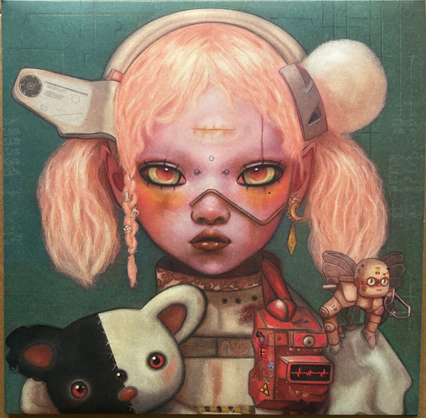

<<<<<<< HEAD
<!DOCTYPE html>
<html lang="en">
<head>
    <meta charset="UTF-8">
    <meta name="viewport" content="width=device-width, initial-scale=1.0">
    <title>BMTH Music Player</title>
    <style>
        * {
            margin: 0;
            padding: 0;
            box-sizing: border-box;
            font-family: 'Segoe UI', 'Arial', sans-serif;
        }

        :root {
            --primary: #ff003c;
            --secondary: #00ffea;
            --dark: #0a0a0a;
            --darker: #050505;
            --gray: #1a1a1a;
            --light: #e0e0e0;
            --glow: 0 0 30px rgba(255, 0, 60, 0.7);
        }

        body {
            background: linear-gradient(135deg, var(--darker) 0%, var(--dark) 50%, #1a0033 100%);
            color: var(--light);
            min-height: 100vh;
            overflow-x: hidden;
            position: relative;
        }

        body::before {
            content: '';
            position: fixed;
            top: 0;
            left: 0;
            width: 100%;
            height: 100%;
            background: 
                radial-gradient(circle at 20% 80%, rgba(255, 0, 60, 0.1) 0%, transparent 50%),
                radial-gradient(circle at 80% 20%, rgba(0, 255, 234, 0.1) 0%, transparent 50%);
            pointer-events: none;
            z-index: -1;
        }

        .container {
            max-width: 1200px;
            margin: 0 auto;
            padding: 20px;
        }

        /* Header Styles */
        header {
            display: flex;
            justify-content: space-between;
            align-items: center;
            padding: 20px 0;
            border-bottom: 1px solid rgba(255, 0, 60, 0.3);
            margin-bottom: 30px;
            position: relative;
        }

        .logo {
            display: flex;
            align-items: center;
            gap: 15px;
        }

        .logo-img {
            width: 60px;
            height: 60px;
            border-radius: 10px;
            object-fit: cover;
            border: 2px solid var(--primary);
            box-shadow: var(--glow);
            transition: transform 0.3s ease;
        }

        .logo-img:hover {
            transform: rotate(5deg) scale(1.1);
        }

        .logo-text {
            font-size: 2.5rem;
            font-weight: 900;
            background: linear-gradient(45deg, var(--primary), var(--secondary));
            -webkit-background-clip: text;
            -webkit-text-fill-color: transparent;
            text-shadow: var(--glow);
            letter-spacing: -1px;
        }

        /* Main Content */
        .main-content {
            display: grid;
            grid-template-columns: 1fr 1fr;
            gap: 40px;
            margin-bottom: 40px;
        }

        @media (max-width: 768px) {
            .main-content {
                grid-template-columns: 1fr;
            }
        }

        /* Album Art Section */
        .album-section {
            text-align: center;
        }

        .album-art-container {
            position: relative;
            width: 100%;
            max-width: 400px;
            margin: 0 auto 20px;
        }

        .album-art {
            width: 100%;
            height: 400px;
            border-radius: 15px;
            overflow: hidden;
            position: relative;
            box-shadow: 
                0 0 50px rgba(255, 0, 60, 0.3),
                0 0 100px rgba(0, 255, 234, 0.1),
                inset 0 0 50px rgba(0, 0, 0, 0.5);
            border: 3px solid rgba(255, 255, 255, 0.1);
            transition: all 0.3s ease;
        }

        .album-art:hover {
            transform: scale(1.02);
            box-shadow: 
                0 0 70px rgba(255, 0, 60, 0.5),
                0 0 120px rgba(0, 255, 234, 0.2);
        }

        .album-art img {
            width: 100%;
            height: 100%;
            object-fit: cover;
        }

        .album-art::after {
            content: '';
            position: absolute;
            top: 0;
            left: 0;
            width: 100%;
            height: 100%;
            background: linear-gradient(45deg, 
                rgba(255, 0, 60, 0.1) 0%, 
                rgba(0, 255, 234, 0.1) 100%);
            pointer-events: none;
        }

        .album-info {
            margin-top: 20px;
        }

        .song-title {
            font-size: 2rem;
            font-weight: 800;
            margin-bottom: 5px;
            background: linear-gradient(45deg, var(--primary), var(--secondary));
            -webkit-background-clip: text;
            -webkit-text-fill-color: transparent;
            text-shadow: var(--glow);
        }

        .song-artist {
            font-size: 1.2rem;
            color: var(--secondary);
            opacity: 0.8;
        }

        /* Player Section */
        .player-section {
            background: rgba(10, 10, 10, 0.8);
            border-radius: 15px;
            padding: 30px;
            border: 1px solid rgba(255, 0, 60, 0.2);
            box-shadow: 0 10px 30px rgba(0, 0, 0, 0.5);
            backdrop-filter: blur(10px);
            position: relative;
            overflow: hidden;
        }

        .player-section::before {
            content: '';
            position: absolute;
            top: -50%;
            left: -50%;
            width: 200%;
            height: 200%;
            background: linear-gradient(45deg, 
                transparent, 
                rgba(255, 0, 60, 0.1), 
                transparent);
            animation: shine 3s infinite;
            pointer-events: none;
        }

        @keyframes shine {
            0% { transform: translateX(-100%) translateY(-100%) rotate(45deg); }
            100% { transform: translateX(100%) translateY(100%) rotate(45deg); }
        }

        .progress-area {
            width: 100%;
            height: 8px;
            background: var(--gray);
            border-radius: 10px;
            margin-bottom: 10px;
            cursor: pointer;
            position: relative;
            overflow: hidden;
            border: 1px solid rgba(255, 255, 255, 0.1);
        }

        .progress-bar {
            height: 100%;
            width: 0%;
            background: linear-gradient(90deg, var(--primary), var(--secondary));
            border-radius: 10px;
            position: relative;
            transition: width 0.1s linear;
            box-shadow: 0 0 10px rgba(255, 0, 60, 0.5);
        }

        .progress-bar::after {
            content: '';
            position: absolute;
            right: -5px;
            top: 50%;
            transform: translateY(-50%);
            width: 18px;
            height: 18px;
            background: var(--light);
            border-radius: 50%;
            box-shadow: 0 0 15px var(--primary);
            border: 2px solid var(--dark);
        }

        .timer {
            display: flex;
            justify-content: space-between;
            font-size: 0.9rem;
            color: var(--secondary);
            margin-bottom: 30px;
            font-weight: 600;
        }

        .controls {
            display: flex;
            justify-content: center;
            align-items: center;
            gap: 20px;
            margin: 30px 0;
        }

        .control-btn {
            background: rgba(255, 255, 255, 0.1);
            border: none;
            color: var(--light);
            width: 50px;
            height: 50px;
            border-radius: 50%;
            display: flex;
            align-items: center;
            justify-content: center;
            cursor: pointer;
            transition: all 0.3s ease;
            font-size: 1.2rem;
            backdrop-filter: blur(10px);
            border: 1px solid rgba(255, 255, 255, 0.1);
            position: relative;
            overflow: hidden;
        }

        .control-btn::before {
            content: '';
            position: absolute;
            top: 0;
            left: -100%;
            width: 100%;
            height: 100%;
            background: linear-gradient(90deg, transparent, rgba(255, 255, 255, 0.2), transparent);
            transition: left 0.5s;
        }

        .control-btn:hover::before {
            left: 100%;
        }

        .control-btn:hover {
            background: var(--primary);
            transform: scale(1.1);
            box-shadow: 0 0 20px rgba(255, 0, 60, 0.5);
        }

        .control-btn.active {
            background: var(--primary);
            box-shadow: 0 0 20px rgba(255, 0, 60, 0.5);
        }

        .play-pause {
            width: 70px;
            height: 70px;
            background: linear-gradient(135deg, var(--primary), var(--secondary));
            font-size: 1.8rem;
            box-shadow: 0 0 30px rgba(255, 0, 60, 0.5);
            border: none;
        }

        .play-pause:hover {
            box-shadow: 0 0 40px rgba(255, 0, 60, 0.8);
            transform: scale(1.15);
        }

        .volume-container {
            display: flex;
            align-items: center;
            gap: 10px;
            margin: 20px 0;
            justify-content: center;
        }

        .volume-slider {
            width: 150px;
            -webkit-appearance: none;
            height: 6px;
            border-radius: 5px;
            background: var(--gray);
            outline: none;
            border: 1px solid rgba(255, 255, 255, 0.1);
        }

        .volume-slider::-webkit-slider-thumb {
            -webkit-appearance: none;
            width: 18px;
            height: 18px;
            border-radius: 50%;
            background: var(--primary);
            cursor: pointer;
            box-shadow: 0 0 10px rgba(255, 0, 60, 0.5);
            border: 2px solid var(--light);
        }

        /* Playlist */
        .playlist {
            margin-top: 30px;
        }

        .playlist-title {
            font-size: 1.5rem;
            margin-bottom: 15px;
            color: var(--secondary);
            border-bottom: 1px solid rgba(0, 255, 234, 0.3);
            padding-bottom: 10px;
            text-shadow: 0 0 10px rgba(0, 255, 234, 0.5);
        }

        .playlist-items {
            max-height: 200px;
            overflow-y: auto;
            border-radius: 8px;
            background: rgba(0, 0, 0, 0.3);
            border: 1px solid rgba(255, 255, 255, 0.1);
        }

        .playlist-item {
            padding: 12px 15px;
            background: rgba(255, 255, 255, 0.05);
            margin: 2px;
            border-radius: 6px;
            cursor: pointer;
            transition: all 0.3s ease;
            display: flex;
            align-items: center;
            gap: 10px;
            border-left: 3px solid transparent;
        }

        .playlist-item:hover {
            background: rgba(255, 0, 60, 0.2);
            transform: translateX(5px);
            border-left: 3px solid var(--primary);
        }

        .playlist-item.active {
            background: rgba(255, 0, 60, 0.3);
            border-left: 3px solid var(--primary);
            box-shadow: inset 0 0 10px rgba(255, 0, 60, 0.3);
        }

        .playlist-number {
            color: var(--secondary);
            font-weight: bold;
            min-width: 25px;
            text-shadow: 0 0 5px rgba(0, 255, 234, 0.5);
        }

        .playlist-name {
            flex: 1;
            font-weight: 500;
        }

        /* Lyrics Section */
        .lyrics-section {
            grid-column: 1 / -1;
            background: rgba(10, 10, 10, 0.8);
            border-radius: 15px;
            padding: 30px;
            border: 1px solid rgba(255, 0, 60, 0.2);
            box-shadow: 0 10px 30px rgba(0, 0, 0, 0.5);
            backdrop-filter: blur(10px);
        }

        .lyrics-container {
            height: 400px;
            overflow-y: auto;
            padding: 20px;
            background: rgba(0, 0, 0, 0.5);
            border-radius: 10px;
            margin-top: 15px;
            scroll-behavior: smooth;
            border: 1px solid rgba(255, 255, 255, 0.1);
            position: relative;
        }

        .lyrics {
            text-align: center;
            line-height: 2;
            font-size: 1.2rem;
            padding: 10px;
        }

        .lyrics p {
            margin: 15px 0;
            padding: 8px 15px;
            border-radius: 8px;
            transition: all 0.3s ease;
            opacity: 0.7;
            min-height: 50px;
            display: flex;
            align-items: center;
            justify-content: center;
        }

        .current-line {
            color: var(--primary);
            font-weight: bold;
            font-size: 1.4rem;
            text-shadow: 0 0 15px rgba(255, 0, 60, 0.8);
            margin: 20px 0;
            transform: scale(1.05);
            transition: all 0.3s ease;
            opacity: 1;
            background: rgba(255, 0, 60, 0.1);
            border: 1px solid rgba(255, 0, 60, 0.3);
            box-shadow: 0 0 20px rgba(255, 0, 60, 0.3);
        }

        /* Scrollbar Styling */
        .lyrics-container::-webkit-scrollbar,
        .playlist-items::-webkit-scrollbar {
            width: 8px;
        }

        .lyrics-container::-webkit-scrollbar-track,
        .playlist-items::-webkit-scrollbar-track {
            background: rgba(255, 255, 255, 0.1);
            border-radius: 10px;
        }

        .lyrics-container::-webkit-scrollbar-thumb,
        .playlist-items::-webkit-scrollbar-thumb {
            background: linear-gradient(135deg, var(--primary), var(--secondary));
            border-radius: 10px;
        }

        /* Footer */
        footer {
            text-align: center;
            padding: 20px;
            border-top: 1px solid rgba(255, 0, 60, 0.3);
            margin-top: 40px;
            color: var(--secondary);
            opacity: 0.7;
            font-size: 0.9rem;
        }

        /* Status */
        .status {
            text-align: center;
            padding: 12px;
            background: rgba(255, 0, 60, 0.2);
            border-radius: 8px;
            margin-top: 15px;
            font-size: 0.9rem;
            border: 1px solid rgba(255, 0, 60, 0.3);
            text-shadow: 0 0 5px rgba(255, 0, 60, 0.5);
        }

        /* Animation */
        @keyframes pulse {
            0% { box-shadow: 0 0 0 0 rgba(255, 0, 60, 0.7); }
            70% { box-shadow: 0 0 0 15px rgba(255, 0, 60, 0); }
            100% { box-shadow: 0 0 0 0 rgba(255, 0, 60, 0); }
        }

        .pulse {
            animation: pulse 2s infinite;
        }

        /* Visualizer */
        .visualizer {
            display: flex;
            justify-content: center;
            align-items: flex-end;
            height: 40px;
            gap: 3px;
            margin: 20px 0;
        }

        .bar {
            width: 4px;
            background: linear-gradient(to top, var(--primary), var(--secondary));
            border-radius: 2px;
            transition: height 0.1s ease;
        }

        /* Responsive */
        @media (max-width: 768px) {
            .logo-text {
                font-size: 1.8rem;
            }
            
            .album-art {
                height: 300px;
            }
            
            .song-title {
                font-size: 1.5rem;
            }
            
            .controls {
                gap: 10px;
            }
            
            .control-btn {
                width: 45px;
                height: 45px;
            }
            
            .play-pause {
                width: 60px;
                height: 60px;
            }
        }
    </style>
</head>
<body>
    <div class="container">
        <header>
            <div class="logo">
                
                <div class="logo-text">POST HUMAN: NeX GEn</div>
            </div>
        </header>

        <div class="main-content">
            <div class="album-section">
                <div class="album-art-container">
                    <div class="album-art">
                        
                    </div>
                </div>
                <div class="album-info">
                    <div class="song-title" id="current-song-title">YOUtopia</div>
                    <div class="song-artist">Bring Me The Horizon</div>
                </div>
            </div>

            <div class="player-section">
                <div class="progress-area">
                    <div class="progress-bar"></div>
                </div>
                <div class="timer">
                    <span class="current-time">0:00</span>
                    <span class="max-duration">0:00</span>
                </div>

                <div class="visualizer" id="visualizer">
                    <!-- Visualizer bars will be generated by JavaScript -->
                </div>

                <div class="controls">
                    <button class="control-btn shuffle-btn" title="Shuffle">⇄</button>
                    <button class="control-btn prev-btn" title="Previous">⏮</button>
                    <button class="control-btn play-pause" title="Play">▶</button>
                    <button class="control-btn next-btn" title="Next">⏭</button>
                    <button class="control-btn repeat-btn" title="Repeat">↻</button>
                </div>

                <div class="volume-container">
                    <span class="volume-icon">🔊</span>
                    <input type="range" min="0" max="100" value="70" class="volume-slider">
                </div>

                <div class="playlist">
                    <div class="playlist-title">PLAYLIST</div>
                    <div class="playlist-items" id="playlist">
                        <!-- Playlist items will be populated by JavaScript -->
                    </div>
                </div>

                <div class="status" id="status">Ready to play</div>
            </div>

            <div class="lyrics-section">
                <div class="playlist-title">LYRICS</div>
                <div class="lyrics-container">
                    <div class="lyrics" id="lyrics">
                        <!-- Lyrics will be populated by JavaScript -->
                    </div>
                </div>
            </div>
        </div>

        <footer>
            Bring Me The Horizon - POST HUMAN: NeX GEn
        </footer>
    </div>

    <script>
        // Song data with lyrics
        const songs = [
            {
		        id: 1,
                title: "(OST) Dreamseeker",
                file: "audio/1.dreamseeker.mp3",
                cover: "img/cover.jpg",
		    },

            {
                id: 2,
                title: "YOUtopia",
                file: "audio/2.YOUtopia.mp3",
                cover: "img/cover.jpg",
                lyrics: [
                    { time: 11.55, text: "There's a place I wanna take you" },
    { time: 14.32, text: "But I'm not quite there myself yet" },
    { time: 19.72, text: "(Doo-doo-doo-doo-doo)" },
    { time: 22.18, text: "I'm getting better, but there's still days" },
    { time: 25.39, text: "Where I wish that I was someone else" },
    { time: 31.40, text: "But I know" },
    { time: 32.64, text: "There is a home, somewhere" },
    { time: 38.16, text: "Beyond my bones" },
    { time: 42.06, text: "And I'm just too terrified" },
    { time: 48.09, text: "To dive inside" },
    { time: 53.12, text: "Soul like a cemetery" },
    { time: 58.68, text: "Hard to ignore, we're sick to the core" },
    { time: 65.58, text: "A world's been buried" },
    { time: 69.06, text: "Where love is the law, a youtopia" },
    { time: 80.83, text: "(Scream)" },
    { time: 97.43, text: "Golden raspberry" },
    { time: 100.24, text: "For the performance in your head" },
    { time: 105.97, text: "(Doo-doo-doo-doo-doo)" },
    { time: 108.05, text: "Stop pushing daisies" },
    { time: 110.99, text: "No one wants flowers when they're dead" },
    { time: 117.68, text: "Soul like a cemetery" },
    { time: 123.03, text: "Hard to ignore, we're sick to the core" },
    { time: 130.16, text: "A world's been buried" },
    { time: 133.80, text: "Where love is the law, a youtopia" },
    { time: 140.87, text: "(There is a home)" },
    { time: 142.39, text: "There is a home, ah" },
    { time: 146.22, text: "(Beyond our bones)" },
    { time: 147.77, text: "Beyond our bones" },
    { time: 150.30, text: "Let's connect to the divine" },
    { time: 156.15, text: "It's okay to cry, yeah" },
    { time: 172.84, text: "Soul like a cemetery" },
    { time: 178.55, text: "Hard to ignore, we're sick to the core" },
    { time: 185.47, text: "A world's been buried" },
    { time: 189.17, text: "Where love is the law" },
    { time: 194.64, text: "A youtopia (there's a place I wanna take you)" },
    { time: 200.27, text: "A youtopia (there's a place I wanna take you)" },
    { time: 206.17, text: "A youtopia (there's a place I wanna take you)" },
    { time: 211.88, text: "Where love is the law, a youtopia" },
    { time: 236.33, text: "What was it like?" },
    { time: 238.23, text: "It's like I walked into a dream" },
    { time: 240.88, text: "And stepped out of the coma" }
                ]
            },
            {
                id: 3,
                title: "Kool-Aid",
                file: "audio/3.Kool-Aid.mp3",
                cover: "img/cover.jpg",
                lyrics: [
                        { time: 14.34, text: "We are the children of the devolution" },
    { time: 17.14, text: "The infamous martyrs, the scars on the sun" },
    { time: 20.94, text: "Asphyxiating with a smile on your face" },
    { time: 23.38, text: "While they pull your teeth out one by one" },
    { time: 27.24, text: "Is this what you wanted? (No)" },
    { time: 30.31, text: "Do you want some more? (Yes)" },
    { time: 33.77, text: "D-generation" },
    { time: 37.02, text: "Who's keeping score?" },
    { time: 38.72, text: "'Cause you got a taste now, drank the Kool-Aid by the jug" },
    { time: 45.24, text: "So suffer your fate, oh, come here and give me a hug" },
    { time: 51.76, text: "Nobody loves you like I love you, oh, my dear" },
    { time: 58.07, text: "But you should've known that this was gonna end in tears" },
    { time: 62.69, text: "Such a sucker for an execution" },
    { time: 65.28, text: "The void is a vampire, fat on our blood" },
    { time: 68.83, text: "Domesticated like a cat in a cage" },
    { time: 71.12, text: "While they try their hand at playing God" },
    { time: 75.29, text: "Is this what you wanted? (No)" },
    { time: 78.38, text: "Do you want some more? (Yeah)" },
    { time: 81.80, text: "D-generation" },
    { time: 84.70, text: "Afraid there's no cure" },
    { time: 86.76, text: "'Cause you got a taste now, drank the Kool-Aid by the jug" },
    { time: 93.23, text: "So suffer your fate, oh, come here and give me a hug" },
    { time: 99.56, text: "Nobody loves you like I love you, oh, my dear (oh)" },
    { time: 106.02, text: "But you should've known that this was gonna end in tears" },
    { time: 122.35, text: "I got my hands around your throat, I love the way you choke" },
    { time: 126.15, text: "'Cause I am yours and you are mine, I'll never let you go" },
    { time: 129.18, text: "My hands around your throat, I love the way you choke" },
    { time: 132.37, text: "'Cause I am yours and you are mine, I'll never let you go" },
    { time: 140.26, text: "I'll never let you go" },
    { time: 146.98, text: "Get the fuck up" },
    { time: 153.36, text: "Yeah" },
    { time: 160.32, text: "'Cause you got a taste now, drank the Kool-Aid by the jug" },
    { time: 166.61, text: "So suffer your fate, oh, come here and give me a hug" },
    { time: 173.25, text: "Nobody loves you like I love you, oh, my dear" },
    { time: 179.84, text: "You should've known, you should've known" },
    { time: 186.08, text: "You should've known, that this was gonna end in tears" },
    { time: 193.35, text: "You should've known" },
    { time: 198.59, text: "What if it's like" },
    { time: 200.02, text: "La, la-la-la, la-la-la" },
    { time: 205.68, text: "La-la-la, la-la-la, la-la-la?" },
    { time: 210.43, text: "Oh, I forgot something" },
    { time: 211.88, text: "La-la-la, la-la-la, la-la-la, la, yeah" },
    { time: 218.05, text: "La-la-la" },
    { time: 220.13, text: "That this was gonna end in tears" },
    { time: 222.47, text: "Or some shit like that" }

                ]
            },
            {
                id: 4,
                title: "Top 10 Statues That Cried Blood",
                file: "audio/4.Top-10-staTues-tHat-CriEd-bloOd.mp3",
                cover: "img/cover.jpg",
                lyrics: [
                    { time: 9.23, text: "Okay" },
    { time: 28.13, text: "I guess that some of us" },
    { time: 31.55, text: "Are just born with tragedy" },
    { time: 34.14, text: "In our blood" },
    { time: 36.50, text: "It's just basic chemistry" },
    { time: 39.30, text: "Or maybe all these open wounds" },
    { time: 41.89, text: "Is how the light gets into you" },
    { time: 44.37, text: "'Cause I'm starting to realise" },
    { time: 48.27, text: "No one's gonna come and rescue me" },
    { time: 52.93, text: "I'm drowning in my sleep" },
    { time: 55.25, text: "The scars have got too deep" },
    { time: 57.85, text: "And no amount of love could set you free" },
    { time: 62.52, text: "The fight's inside, I'll take myself to hell and back" },
    { time: 66.67, text: "Tonight we go to war" },
    { time: 70.38, text: "Someone put a gun" },
    { time: 73.11, text: "Straight to our hearts and paint the walls with our love" },
    { time: 78.34, text: "There's a world of hurt in us" },
    { time: 81.51, text: "And maybe once we spill our guts" },
    { time: 83.88, text: "We can stitch ourselves back up" },
    { time: 86.26, text: "Yeah, I'm starting to realize" },
    { time: 90.17, text: "No one's gonna come and rescue me" },
    { time: 94.98, text: "I'm drowning in my sleep" },
    { time: 97.53, text: "The scars have got too deep" },
    { time: 100.10, text: "And no amount of love could set you free" },
    { time: 104.84, text: "The fight's inside, I'll take myself to hell and back" },
    { time: 108.70, text: "Tonight we go to war" },
    { time: 120.63, text: "'Cause I know that you're low" },
    { time: 123.24, text: "But once you hit the bottom" },
    { time: 125.65, text: "At least there's nowhere to go but up" },
    { time: 130.24, text: "Yeah, I know that you're low" },
    { time: 133.42, text: "But once you hit the bottom" },
    { time: 135.56, text: "At least there's nowhere to go but up" },
    { time: 143.18, text: "Yeah" },
    { time: 146.36, text: "The hardest thing you'll ever know" },
    { time: 148.70, text: "Is there's no love like your own" },
    { time: 153.57, text: "No, there's no love like your own" },
    { time: 159.36, text: "'Cause no one's gonna come and rescue me" },
    { time: 164.28, text: "I'm drowning in my sleep" },
    { time: 166.64, text: "The scars have got too deep" },
    { time: 169.32, text: "And no amount of love could set you free" },
    { time: 173.93, text: "The fight's inside, I'll take myself to hell and back" },
    { time: 179.28, text: "No one's gonna come and rescue me" },
    { time: 183.97, text: "I'm drowning in my sleep" },
    { time: 186.34, text: "The scars have got too deep" },
    { time: 189.26, text: "And no amount of love could set you free" },
    { time: 193.86, text: "The fight's inside" },
    { time: 195.25, text: "I'll take myself to hell and back" },
    { time: 197.80, text: "Tonight we go to war" }

                ]
            },
            {
                id: 5,
                title: "liMOusIne",
                file: "audio/5.liMOusIne.mp3",
                cover: "img/cover.jpg",
                lyrics: [
                    { time: 0.21, text: "Drag me down some more" },
    { time: 3.63, text: "Get me low like a basement" },
    { time: 8.11, text: "I hope that you wrote all your songs for me" },
    { time: 17.17, text: "On my last nerve, burnt out all my veins" },
    { time: 21.19, text: "Blue angels trying to sacrifice the shame" },
    { time: 25.09, text: "Soul crushing, going back around the turn again" },
    { time: 33.09, text: "Cut my teeth on a diamond 'til it's rough" },
    { time: 36.82, text: "Feeling good, but it's never good enough" },
    { time: 41.03, text: "Got a bellyache crawling in my guts again" },
    { time: 47.18, text: "Come closer" },
    { time: 53.95, text: "I'll swallow the bile for you" },
    { time: 62.64, text: "Don't want closure" },
    { time: 68.40, text: "I'll stitch myself up alone" },
    { time: 78.89, text: "Drag me down some more" },
    { time: 82.12, text: "Get me low like a basement" },
    { time: 86.58, text: "I hope that you wrote all your songs for me" },
    { time: 94.55, text: "Kiss the ground I walk" },
    { time: 98.12, text: "I'm a fool for you" },
    { time: 102.01, text: "In a rut, belted up" },
    { time: 105.72, text: "In the limousine" },
    { time: 119.59, text: "Hop inside, take a ride to the top" },
    { time: 123.67, text: "We can break, but we're never gonna stop" },
    { time: 127.55, text: "Got a death wish tugging on my sleeves again" },
    { time: 133.95, text: "Roll over" },
    { time: 140.12, text: "I'll tickle that spot for you" },
    { time: 149.15, text: "It's not over" },
    { time: 155.60, text: "Didn't want to let go" },
    { time: 165.18, text: "Drag me down some more" },
    { time: 168.96, text: "Get me low like a basement" },
    { time: 173.18, text: "I hope that you wrote all your songs for me" },
    { time: 181.04, text: "Kiss the ground I walk" },
    { time: 184.68, text: "I'm a fool for you" },
    { time: 188.62, text: "In a rut, belted up" },
    { time: 192.55, text: "In the limousine" },
    { time: 198.96, text: "So lock all the doors" },
    { time: 203.31, text: "'Cause I'm insecure" },
    { time: 207.15, text: "Let's get out of here" },
    { time: 212.15, text: "What the fuck you waiting for?" },
    { time: 225.43, text: "Do you like the way your skin crawls?" },
    { time: 229.48, text: "How it makes your body twitch?" },
    { time: 233.74, text: "Does it make you sick?" },
    { time: 241.69, text: "Does it make you sick?" },
    { time: 245.62, text: "Does it make you sick?" },
    { time: 249.94, text: "Sick!" }

                ]
            },
            {
                id: 6,
                title: "DArkSide",
                file: "audio/6.DArkSide.mp3",
                cover: "img/cover.jpg",
                lyrics: [
                    { time: 12.59, text: "Sinking under" },
    { time: 15.49, text: "Think my angel's fallen" },
    { time: 18.33, text: "Safe place, plundered" },
    { time: 21.20, text: "Bastards kicked the doors in" },
    { time: 23.66, text: "Picked the stitches, now I can't stop bleeding" },
    { time: 26.49, text: "Three in the morning, I ain't slept all weekend" },
    { time: 29.37, text: "Six feet in the dirt, still breathing" },
    { time: 32.09, text: "Don't give a fuck if my heart stops beating" },
    { time: 34.95, text: "Hey, I'm begging you to stay" },
    { time: 38.70, text: "My dark side won today" },
    { time: 41.71, text: "My heart keeps breaking" },
    { time: 43.39, text: "Over and over" },
    { time: 46.21, text: "Hey, don't let me out your sight" },
    { time: 50.22, text: "Can't trust myself tonight" },
    { time: 52.90, text: "My heart keeps breaking" },
    { time: 54.93, text: "Can you talk me off the ledge again?" },
    { time: 58.25, text: "Something haunts me" },
    { time: 61.20, text: "Footsteps in the basement" },
    { time: 64.22, text: "Out of body" },
    { time: 67.12, text: "But there's no escaping" },
    { time: 69.35, text: "I picked the stitches, now I can't stop bleeding" },
    { time: 72.32, text: "Three in the morning, I ain't slept all weekend" },
    { time: 75.06, text: "Six feet in the dirt, still breathing" },
    { time: 77.70, text: "Don't give a fuck if my heart stops beating" },
    { time: 80.69, text: "Hey, I'm begging you to stay" },
    { time: 84.45, text: "My dark side won today" },
    { time: 87.48, text: "My heart keeps breaking" },
    { time: 89.29, text: "Over and over" },
    { time: 92.05, text: "Hey, don't let me out your sight" },
    { time: 96.04, text: "Can't trust myself tonight" },
    { time: 98.84, text: "My heart keeps breaking" },
    { time: 100.54, text: "Can you talk me off the ledge again?" },
    { time: 103.34, text: "Something's in the way" },
    { time: 105.98, text: "Don't know what I can say" },
    { time: 109.04, text: "Memories are haunting me" },
    { time: 111.81, text: "A sickness taking over" },
    { time: 114.47, text: "So bury me alive" },
    { time: 117.42, text: "There's nowhere left to hide" },
    { time: 120.42, text: "And say goodbye 'cause maybe I" },
    { time: 123.44, text: "Maybe I won't miss me when I'm gone" },
    { time: 129.16, text: "Hey, I'm begging you to stay" },
    { time: 133.18, text: "My dark side won today" },
    { time: 135.89, text: "My heart keeps breaking" },
    { time: 137.88, text: "Over and over" },
    { time: 140.52, text: "Hey, don't let me out your sight" },
    { time: 144.52, text: "Can't trust myself tonight" },
    { time: 147.38, text: "My heart keeps breaking" },
    { time: 149.18, text: "Can you talk me off the ledge again?" },
    { time: 152.91, text: "Can't trust myself tonight" },
    { time: 155.80, text: "Can't trust myself tonight" },
    { time: 158.76, text: "Can't trust myself" },
    { time: 160.63, text: "Can you talk me off the ledge again?" }
                ]
            },

            {
		        id: 7,
                title: "A Bullet w/ My Name On",
                file: "audio/7.my_namE_On.mp3",
                cover: "img/cover.jpg",
		    },
            {
		        id: 8,
                title: "(OST) (Spi)ritual",
                file: "audio/8.(spi)ritual.mp3",
                cover: "img/cover.jpg",
		    },
            {
		        id: 9,
                title: "N/A",
                file: "audio/9.NA.mp3",
                cover: "img/cover.jpg",
		    },
            {
                id: 10,
                title: "LosT",
                file: "audio/10.LosT.mp3",
                cover: "img/cover.jpg",
                lyrics: [
                    { time: 15.52, text: "Watching Evangelion with a big fat slug of ketamine" },
    { time: 20.53, text: "I lost the plot a little while ago, oh-oh" },
    { time: 25.58, text: "My dog just died, my friends hate me, I saw myself on MTV" },
    { time: 30.73, text: "And my ego is not my amigo" },
    { time: 36.00, text: "Oh, maybe I don't belong on this planet" },
    { time: 38.72, text: "Red crescent moons all over my hands" },
    { time: 41.03, text: "It's too much to take, I can't understand it" },
    { time: 44.08, text: "Someone, tell me" },
    { time: 46.87, text: "Why am I this way?" },
    { time: 54.55, text: "Stupid medicine not doing anything" },
    { time: 56.99, text: "What the hell is fucking wrong with me?" },
    { time: 64.53, text: "I guess there's no remedy, I'm so terribly lost" },
    { time: 70.07, text: "Imaginary enemies, suicidal tendencies" },
    { time: 74.86, text: "Serotonin's proper on its arse, oh-oh" },
    { time: 80.05, text: "I used to go to therapy, but the doctor tried to section me" },
    { time: 85.23, text: "The next time that I open up to someone will be my autopsy because" },
    { time: 90.75, text: "I don't think I belong on this planet" },
    { time: 93.44, text: "Red crescent moons all over my hands" },
    { time: 95.60, text: "It's too much to take, I can't fucking stand it" },
    { time: 98.26, text: "Someone, tell me" },
    { time: 101.17, text: "Why am I this way?" },
    { time: 108.61, text: "Stupid medicine not doing anything" },
    { time: 111.38, text: "What the hell is fucking wrong with me?" },
    { time: 118.75, text: "I guess there's no remedy, own worst enemy, I'm so terribly lost" },
    { time: 126.81, text: "If I keep this up" },
    { time: 128.43, text: "I think I'm gonna break down" },
    { time: 132.11, text: "If I keep this up" },
    { time: 133.68, text: "I think I'm gonna break down (oh my God)" },
    { time: 138.70, text: "I think I'm gonna break down (oh my God)" },
    { time: 143.59, text: "I think I'm gonna break down (whoa, oh, oh-oh, oh)" },
    { time: 148.99, text: "I think I'm gonna break down (whoa, oh, oh-oh, oh)" },
    { time: 153.23, text: "Someone, tell me" },
    { time: 155.64, text: "Why am I this way?" },
    { time: 163.38, text: "Stupid medicine not doing anything" },
    { time: 166.05, text: "What the hell is fucking wrong with me?" },
    { time: 173.24, text: "I guess there's no remedy, I'm so terribly lost" },
    { time: 176.30, text: "Why am I this way?" },
    { time: 183.89, text: "Stupid medicine not doing anything" },
    { time: 186.82, text: "What the hell is fucking wrong with me?" },
    { time: 193.98, text: "I guess there's no remedy, own worst enemy, I'm so terribly lost" }
                ]
            },
            {
                id: 11,
                title: "sTraNgeRs",
                file: "audio/11.sTraNgeRs.mp3",
                cover: "img/cover.jpg",
                lyrics: [
                    { time: 0.04, text: "Maybe I'll just be fucked up forever" },
    { time: 4.41, text: "Should've figured myself out by now" },
    { time: 8.07, text: "And I don't wanna tear myself open, no" },
    { time: 12.32, text: "But it's hard to care when you bleed out" },
    { time: 15.62, text: "So won't you break me down, break me down, make me get better?" },
    { time: 20.54, text: "I confess I'm a mess, some kind of error" },
    { time: 24.16, text: "Well, maybe I was destined to disappear" },
    { time: 30.27, text: "We're just a room full of strangers" },
    { time: 34.50, text: "Looking for something to save us" },
    { time: 38.19, text: "Alone together, we're dying to live, and we're living to die" },
    { time: 44.02, text: "Dying to live, living to die" },
    { time: 46.12, text: "We're just a room full of strangers" },
    { time: 55.48, text: "Well, I guess my guardian angel missed the memo" },
    { time: 59.68, text: "'Cause we're walking on razors again" },
    { time: 63.50, text: "And we swore to God we'd never let this happen, no" },
    { time: 67.91, text: "We dragged ourselves through hell, and we'll be damned if we go back" },
    { time: 71.76, text: "Break me down, break me down, make me get better" },
    { time: 75.53, text: "I confess that I'm a mess, some kind of error" },
    { time: 79.36, text: "Well, maybe I was destined to disappear" },
    { time: 85.52, text: "We're just a room full of strangers" },
    { time: 89.45, text: "Looking for something to save us" },
    { time: 93.45, text: "Alone together, we're dying to live, and we're living to die" },
    { time: 99.18, text: "Dying to live, living to die" },
    { time: 101.57, text: "It never stops, can't erase this" },
    { time: 104.86, text: "So cross out my eyes, tear the pages" },
    { time: 109.07, text: "'Cause you and I, we're just dying to live, and we're living to die" },
    { time: 114.96, text: "Dying to live, living to die" },
    { time: 117.02, text: "It never stops, it don't" },
    { time: 119.01, text: "Where did we go?" },
    { time: 124.75, text: "We're all alone, all alone" },
    { time: 126.74, text: "No place like home" },
    { time: 132.78, text: "Take us back to yesterday" },
    { time: 135.55, text: "SOS" },
    { time: 137.39, text: "Save us from ourselves" },
    { time: 140.52, text: "We're just a room full of strangers" },
    { time: 144.58, text: "Looking for something to save us" },
    { time: 148.53, text: "Alone together, we're dying to live, and we're living to die" },
    { time: 154.38, text: "Dying to live, living to die" },
    { time: 156.35, text: "It never stops, can't erase this" },
    { time: 160.13, text: "So cross out my eyes, tear the pages" },
    { time: 164.27, text: "'Cause you and I, we're just dying to live, and we're living to die" },
    { time: 170.07, text: "Dying to live, living to die" },
    { time: 172.05, text: "We're just a room, we're just a room" },
    { time: 176.06, text: "We're just a room full of strangers" },
    { time: 185.56, text: "Strangers" }

                ]
            },
            {
		        id: 12,
                title: "R.i.p",
                file: "audio/12.R.i.p.mp3",
                cover: "img/cover.jpg",
		    },
            {
                id: 13,
                title: "AmEN!",
                file: "audio/13.AmEN!.mp3",
                cover: "img/cover.jpg",
                lyrics: [
                    { time: "00:00.05", lyric: "I hope you have fun rotting in hell" },
  { time: "00:03.33", lyric: "Swim the witch, slay the infidel" },
  { time: "00:06.62", lyric: "Suck a dick, heretic" },
  { time: "00:08.54", lyric: "I hate you" },
  { time: "00:10.50", lyric: "And I'd like to see you burn, burn, burn" },
  { time: "00:14.00", lyric: "So tell all your friends" },
  { time: "00:16.91", lyric: "This is the end of everything" },
  { time: "00:20.92", lyric: "Too late to repent" },
  { time: "00:23.53", lyric: "The wicked will reap what they sow" },
  { time: "00:28.39", lyric: "We will sanctify (rise, my brethren)" },
  { time: "00:30.78", lyric: "Purify (purge out the sin)" },
  { time: "00:32.17", lyric: "Rejoice in their sorrow and sing" },
  { time: "00:35.15", lyric: "All hail next gen (all hail next gen)" },
  { time: "00:37.80", lyric: "Can I get an amen?" },
  { time: "00:40.83", lyric: "Somebody call the exorcist" },
  { time: "00:44.74", lyric: "This is heresy, the child is possessed" },
  { time: "00:47.76", lyric: "Subjugate the apostate!" },
  { time: "00:49.59", lyric: "Don't you know" },
  { time: "00:52.48", lyric: "You're so six-six-sick?" },
  { time: "00:55.70", lyric: "Yeah, you fanatics prey on me, hate on me" },
  { time: "00:58.19", lyric: "Patiently waiting to watch me bleed" },
  { time: "01:00.16", lyric: "Get your head from out of my ass" },
  { time: "01:01.34", lyric: "Got me feeling like a human centipede" },
  { time: "01:03.69", lyric: "Just let me breathe" },
  { time: "01:04.89", lyric: "Stay the fuck away from me" },
  { time: "01:06.73", lyric: "I don't really want me" },
  { time: "01:08.60", lyric: "As my own enemy" },
  { time: "01:12.36", lyric: "So tell all your friends" },
  { time: "01:15.30", lyric: "This is the end of everything" },
  { time: "01:19.27", lyric: "Too late to repent" },
  { time: "01:21.89", lyric: "We'll bathe in the blood of the damned" },
  { time: "01:26.64", lyric: "We will sanctify (rise, my brethren)" },
  { time: "01:29.00", lyric: "Purify (purge out the sin)" },
  { time: "01:30.41", lyric: "Rejoice in their sorrow and sing" },
  { time: "01:33.49", lyric: "All hail next gen (all hail next gen)" },
  { time: "01:36.01", lyric: "Can I get an amen?" },
  { time: "01:41.82", lyric: "Just let me suffer (just let me breathe)" },
  { time: "01:45.30", lyric: "Just let me suffer (suffer in peace)" },
  { time: "01:48.63", lyric: "Just let me suffer (just let me breathe)" },
  { time: "01:51.85", lyric: "Oh, just let me" },
  { time: "01:53.80", lyric: "Just let me suffer" },
  { time: "01:57.22", lyric: "Just let me breathe" },
  { time: "02:00.62", lyric: "Just let me suffer" },
  { time: "02:03.95", lyric: "Suffer in peace" },
  { time: "02:06.62", lyric: "I'm about to lose control" },
  { time: "02:08.36", lyric: "Fallen from grace, corrupted our faith" },
  { time: "02:11.80", lyric: "Foul renegade" },
  { time: "02:13.59", lyric: "I'm about to lose control" },
  { time: "02:15.25", lyric: "Thou will be done 'til kingdom come" },
  { time: "02:19.58", lyric: "No absolution!" },
  { time: "02:21.59", lyric: "So tell all your friends" },
  { time: "02:23.85", lyric: "This is the end of everything" },
  { time: "02:27.84", lyric: "Too late to repent" },
  { time: "02:30.34", lyric: "The wicked will reap what they sow" },
  { time: "02:35.24", lyric: "We will sanctify, purify" },
  { time: "02:39.04", lyric: "Rejoice in their sorrow and sing" },
  { time: "02:41.88", lyric: "All hail next gen (all hail next gen)" },
  { time: "02:44.64", lyric: "Can I get an amen?" },
  { time: "02:50.01", lyric: "I execute judgment on you" },
  { time: "02:53.17", lyric: "You wicked demon" },
  { time: "02:55.92", lyric: "You burn in hell" },
  { time: "02:59.02", lyric: "You burn in hell" },
  { time: "03:02.84", lyric: "It's over" },
  { time: "03:06.66", lyric: "Wow, that's really cool" },
  { time: "03:07.57", lyric: "" }
                ]
            },
            {
		        id: 14,
                title: "(OST) P.U.S.S.-E",
                file: "audio/14.p.u.s.s.-e.mp3",
                cover: "img/cover.jpg",
		    },
            {
                id: 15,
                title: "DiE4u",
                file: "audio/15.DiE4u.mp3",
                cover: "img/cover.jpg",
                lyrics: [
                    { time: 11.91, text: "You know that I'd die for, I'd cry for" },
    { time: 15.20, text: "You know that I'd die for you" },
    { time: 17.92, text: "You know that I'd breathe for, I'd bleed for" },
    { time: 21.19, text: "You know that I'd breathe for you" },
    { time: 24.06, text: "Let me see my halo, even though it's painful" },
    { time: 27.42, text: "I'm prepared to lose" },
    { time: 30.13, text: "You know that I'd die for, I'd cry for" },
    { time: 32.95, text: "You know that I'd die for you" },
    { time: 47.60, text: "I keep holding my breath for a miracle" },
    { time: 53.31, text: "Hoping the hole in my heart would heal somehow" },
    { time: 59.34, text: "Feeling so fucking close to the edge right now" },
    { time: 64.90, text: "You know you're everything I hate, wish I could escape" },
    { time: 68.84, text: "But you know I would die for you" },
    { time: 72.12, text: "You know that I'd die for, I'd cry for" },
    { time: 75.07, text: "You know that I'd die for you" },
    { time: 77.91, text: "You know that I'd breathe for, I'd bleed for" },
    { time: 81.03, text: "You know that I'd breathe for you" },
    { time: 83.92, text: "Let me see my halo, even though it's painful" },
    { time: 87.53, text: "I'm prepared to lose" },
    { time: 89.71, text: "You know that I'd die for, I'd cry for" },
    { time: 93.04, text: "You know that I'd die for you" },
    { time: 94.78, text: "'Cause I've died inside a thousand times" },
    { time: 98.00, text: "But still I'd kill myself for you" },
    { time: 101.08, text: "'Cause the truth of it, you could slit my wrists" },
    { time: 103.98, text: "And I'd write your name in a heart with the hemorrhage" },
    { time: 107.15, text: "Got me so fucking close to the edge right now" },
    { time: 113.04, text: "You know it's you I need to kick, you make me feel like shit" },
    { time: 116.99, text: "I don't wanna die for you (die for you)" },
    { time: 120.14, text: "You know that I'd die for, I'd cry for" },
    { time: 123.01, text: "You know that I'd die for you" },
    { time: 125.99, text: "You know that I'd breathe for, I'd bleed for" },
    { time: 129.15, text: "You know that I'd breathe for you" },
    { time: 132.12, text: "Let me see my halo, even though it's painful" },
    { time: 135.32, text: "I'm prepared to lose" },
    { time: 138.25, text: "You know that I'd die for, I'd cry for" },
    { time: 141.08, text: "You know that I'd die for you" },
    { time: 144.14, text: "This isn't love, this is a car crash" },
    { time: 147.19, text: "This isn't love, this is a bloodbath" },
    { time: 150.34, text: "This isn't love, this is a sentence" },
    { time: 153.44, text: "It's a bullet in the head" },
    { time: 156.29, text: "This isn't love, this is a car crash" },
    { time: 159.39, text: "This isn't love, this is a bloodbath" },
    { time: 162.15, text: "This isn't love, this is a sentence" },
    { time: 165.44, text: "It's a bullet in the head" },
    { time: 167.81, text: "So pull the trigger" },
    { time: 181.63, text: "You know that I'd die for, I'd cry for" },
    { time: 184.66, text: "You know that I'd die for you" },
    { time: 187.55, text: "You know that I'd breathe for, I'd bleed for" },
    { time: 190.65, text: "You know that I'd breathe for you" },
    { time: 193.50, text: "Let me see my halo, even though it's painful" },
    { time: 197.06, text: "I'm prepared to lose" },
    { time: 199.50, text: "You know that I'd die for, I'd cry for" },
    { time: 202.69, text: "You know that I'd die for you" }

                ]
            },
            {
		        id: 16,
                title: "DIg It",
                file: "audio/16.DIg It.mp3",
                cover: "img/cover.jpg",
		    },
        ];

        // Player elements
        const audio = new Audio();
        const playPauseBtn = document.querySelector('.play-pause');
        const progressBar = document.querySelector('.progress-bar');
        const currentTimeEl = document.querySelector('.current-time');
        const maxDurationEl = document.querySelector('.max-duration');
        const lyricsContainer = document.querySelector('#lyrics');
        const volumeSlider = document.querySelector('.volume-slider');
        const progressArea = document.querySelector('.progress-area');
        const playlistContainer = document.querySelector('#playlist');
        const currentSongTitle = document.querySelector('#current-song-title');
        const albumCover = document.querySelector('#album-cover');
        const headerLogo = document.querySelector('#header-logo');
        const statusEl = document.querySelector('#status');
        const visualizer = document.querySelector('#visualizer');

        let currentSongIndex = 0;
        let isPlaying = false;
        let isShuffled = false;
        let isRepeating = false;
        let visualizerBars = [];
        let lastHighlightedLine = null;

        // Initialize player
        function initPlayer() {
            // Create visualizer bars
            createVisualizer();
            
            // Create playlist
            songs.forEach((song, index) => {
                const playlistItem = document.createElement('div');
                playlistItem.className = `playlist-item ${index === 0 ? 'active' : ''}`;
                playlistItem.innerHTML = `
                    <div class="playlist-number">${song.id}</div>
                    <div class="playlist-name">${song.title}</div>
                `;
                playlistItem.addEventListener('click', () => playSong(index));
                playlistContainer.appendChild(playlistItem);
            });

            // Load first song
            loadSong(currentSongIndex);

            // Event listeners
            playPauseBtn.addEventListener('click', togglePlay);
            document.querySelector('.next-btn').addEventListener('click', nextSong);
            document.querySelector('.prev-btn').addEventListener('click', prevSong);
            document.querySelector('.shuffle-btn').addEventListener('click', toggleShuffle);
            document.querySelector('.repeat-btn').addEventListener('click', toggleRepeat);
            volumeSlider.addEventListener('input', updateVolume);
            progressArea.addEventListener('click', seek);

            // Audio event listeners
            audio.addEventListener('timeupdate', updateProgress);
            audio.addEventListener('loadedmetadata', updateDuration);
            audio.addEventListener('ended', handleSongEnd);
            audio.addEventListener('canplaythrough', () => {
                statusEl.textContent = 'Ready to play';
                statusEl.style.background = 'rgba(0, 255, 234, 0.2)';
                statusEl.style.borderColor = 'rgba(0, 255, 234, 0.3)';
            });
            audio.addEventListener('error', () => {
                statusEl.textContent = 'Error loading audio file';
                statusEl.style.background = 'rgba(255, 0, 60, 0.3)';
            });

            // Initial volume
            audio.volume = volumeSlider.value / 100;

            // Handle album cover loading
            handleAlbumCover();
        }

        // Handle album cover loading with fallback
        function handleAlbumCover() {
            const cover = new Image();
            cover.src = 'img/cover.jpg';
            cover.onload = function() {
                albumCover.src = 'img/cover.jpg';
                headerLogo.src = 'img/cover.jpg';
            };
            cover.onerror = function() {
                const fallbackSvg = '';
                albumCover.src = fallbackSvg;
                headerLogo.src = fallbackSvg;
            };
        }

        // Create visualizer bars
        function createVisualizer() {
            visualizer.innerHTML = '';
            visualizerBars = [];
            for (let i = 0; i < 30; i++) {
                const bar = document.createElement('div');
                bar.className = 'bar';
                bar.style.height = '5px';
                visualizer.appendChild(bar);
                visualizerBars.push(bar);
            }
        }

        // Update visualizer
        function updateVisualizer() {
            if (!isPlaying) return;
            
            visualizerBars.forEach((bar, index) => {
                const height = 5 + Math.random() * 35;
                bar.style.height = `${height}px`;
                bar.style.opacity = 0.3 + (Math.random() * 0.7);
            });
        }

        // Load song
        function loadSong(index) {
            const song = songs[index];
            audio.src = song.file;
            currentSongTitle.textContent = song.title;
            
            // Update active playlist item
            document.querySelectorAll('.playlist-item').forEach((item, i) => {
                item.classList.toggle('active', i === index);
            });

            // Load lyrics
            loadLyrics(song.lyrics);
            
            statusEl.textContent = 'Loading...';
            statusEl.style.background = 'rgba(255, 255, 255, 0.1)';
            
            // Reset last highlighted line
            lastHighlightedLine = null;
        }

        // Load lyrics
        function loadLyrics(lyrics) {
            lyricsContainer.innerHTML = '';
            if (lyrics && lyrics.length > 0) {
                lyrics.forEach(item => {
                    const p = document.createElement('p');
                    p.textContent = item.text;
                    p.dataset.time = item.time;
                    lyricsContainer.appendChild(p);
                });
            } else {
                const p = document.createElement('p');
                p.textContent = 'No lyrics available for this song';
                p.style.opacity = '0.5';
                lyricsContainer.appendChild(p);
            }
        }

        // Toggle play/pause
        function togglePlay() {
            if (isPlaying) {
                pauseMusic();
            } else {
                playMusic();
            }
        }

        function playMusic() {
            isPlaying = true;
            playPauseBtn.innerHTML = '⏸';
            playPauseBtn.title = 'Pause';
            audio.play().catch(error => {
                console.error('Play failed:', error);
                statusEl.textContent = 'Play failed. Click to try again.';
            });
            statusEl.textContent = 'Playing';
            statusEl.style.background = 'rgba(255, 0, 60, 0.3)';
            
            // Start visualizer animation
            visualizerInterval = setInterval(updateVisualizer, 100);
        }

        function pauseMusic() {
            isPlaying = false;
            playPauseBtn.innerHTML = '▶';
            playPauseBtn.title = 'Play';
            audio.pause();
            statusEl.textContent = 'Paused';
            statusEl.style.background = 'rgba(255, 255, 255, 0.1)';
            
            // Stop visualizer
            clearInterval(visualizerInterval);
            visualizerBars.forEach(bar => {
                bar.style.height = '5px';
                bar.style.opacity = '0.3';
            });
        }

        // Next song
        function nextSong() {
            if (isShuffled) {
                currentSongIndex = Math.floor(Math.random() * songs.length);
            } else {
                currentSongIndex = (currentSongIndex + 1) % songs.length;
            }
            loadSong(currentSongIndex);
            if (isPlaying) playMusic();
        }

        // Previous song
        function prevSong() {
            if (isShuffled) {
                currentSongIndex = Math.floor(Math.random() * songs.length);
            } else {
                currentSongIndex = (currentSongIndex - 1 + songs.length) % songs.length;
            }
            loadSong(currentSongIndex);
            if (isPlaying) playMusic();
        }

        // Play specific song
        function playSong(index) {
            currentSongIndex = index;
            loadSong(index);
            if (isPlaying) playMusic();
        }

        // Toggle shuffle
        function toggleShuffle() {
            isShuffled = !isShuffled;
            const shuffleBtn = document.querySelector('.shuffle-btn');
            shuffleBtn.classList.toggle('active', isShuffled);
            statusEl.textContent = isShuffled ? 'Shuffle: ON' : 'Shuffle: OFF';
        }

        // Toggle repeat
        function toggleRepeat() {
            isRepeating = !isRepeating;
            const repeatBtn = document.querySelector('.repeat-btn');
            repeatBtn.classList.toggle('active', isRepeating);
            statusEl.textContent = isRepeating ? 'Repeat: ON' : 'Repeat: OFF';
        }

        // Update volume
        function updateVolume() {
            audio.volume = volumeSlider.value / 100;
        }

        // Update progress
        function updateProgress() {
            const currentTime = audio.currentTime;
            const duration = audio.duration;
            
            if (duration) {
                const progressWidth = (currentTime / duration) * 100;
                progressBar.style.width = `${progressWidth}%`;
                currentTimeEl.textContent = formatTime(currentTime);
                updateLyricsHighlight(currentTime);
            }
        }

        // Update duration
        function updateDuration() {
            if (audio.duration) {
                maxDurationEl.textContent = formatTime(audio.duration);
            }
        }

        // Seek
        function seek(e) {
            const progressWidth = progressArea.clientWidth;
            const clickedOffsetX = e.offsetX;
            const duration = audio.duration;
            
            if (duration) {
                audio.currentTime = (clickedOffsetX / progressWidth) * duration;
            }
        }

        // Handle song end
        function handleSongEnd() {
            if (isRepeating) {
                audio.currentTime = 0;
                playMusic();
            } else {
                nextSong();
            }
        }

        // Update lyrics highlight - FIXED SMOOTH AUTO-SCROLL
        function updateLyricsHighlight(currentTime) {
            const lyricsLines = document.querySelectorAll('.lyrics p');
            const currentSong = songs[currentSongIndex];
            
            if (!currentSong.lyrics || currentSong.lyrics.length === 0) return;

            let currentLine = null;
            let currentLineIndex = -1;

            // Find current line
            for (let i = 0; i < currentSong.lyrics.length; i++) {
                if (currentTime >= currentSong.lyrics[i].time) {
                    currentLine = lyricsLines[i];
                    currentLineIndex = i;
                } else {
                    break;
                }
            }

            // Skip if no line found or same line
            if (!currentLine || currentLine === lastHighlightedLine) return;

            // Remove highlight from all lines
            lyricsLines.forEach(line => line.classList.remove('current-line'));

            // Add highlight to current line
            currentLine.classList.add('current-line');
            lastHighlightedLine = currentLine;

            // Smooth auto-scroll hanya di lyrics container
            const container = document.querySelector('.lyrics-container');
            const lineTop = currentLine.offsetTop;
            const lineHeight = currentLine.offsetHeight;
            const containerHeight = container.clientHeight;
            const containerScrollTop = container.scrollTop;

            // Calculate the position to scroll to (center the line)
            const scrollTo = lineTop - (containerHeight / 2) + (lineHeight / 2);

            // Only scroll if the line is not in the visible area
            const buffer = 50; // Buffer zone in pixels
            const isLineVisible = (
                lineTop >= (containerScrollTop + buffer) && 
                (lineTop + lineHeight) <= (containerScrollTop + containerHeight - buffer)
            );

            if (!isLineVisible) {
                container.scrollTo({
                    top: scrollTo,
                    behavior: 'smooth'
                });
            }
        }

        // Format time
        function formatTime(seconds) {
            if (isNaN(seconds)) return "0:00";
            const min = Math.floor(seconds / 60);
            const sec = Math.floor(seconds % 60);
            return `${min}:${sec < 10 ? '0' : ''}${sec}`;
        }

        // Initialize player when page loads
        window.addEventListener('load', initPlayer);

        // Visualizer interval variable
        let visualizerInterval;
    </script>
</body>
